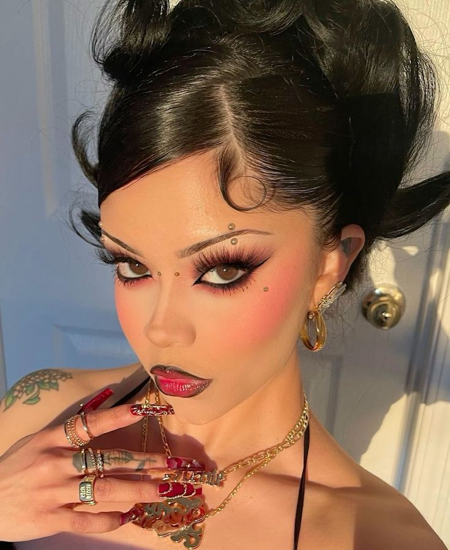
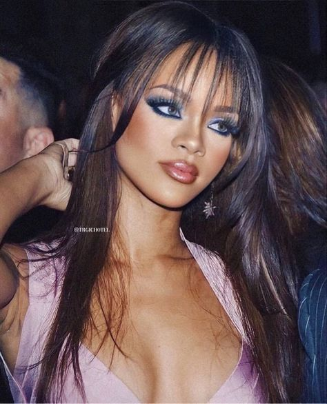
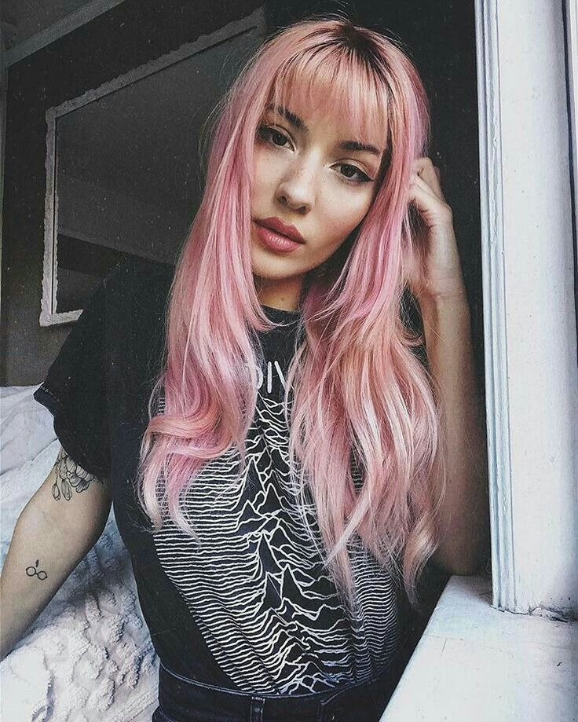
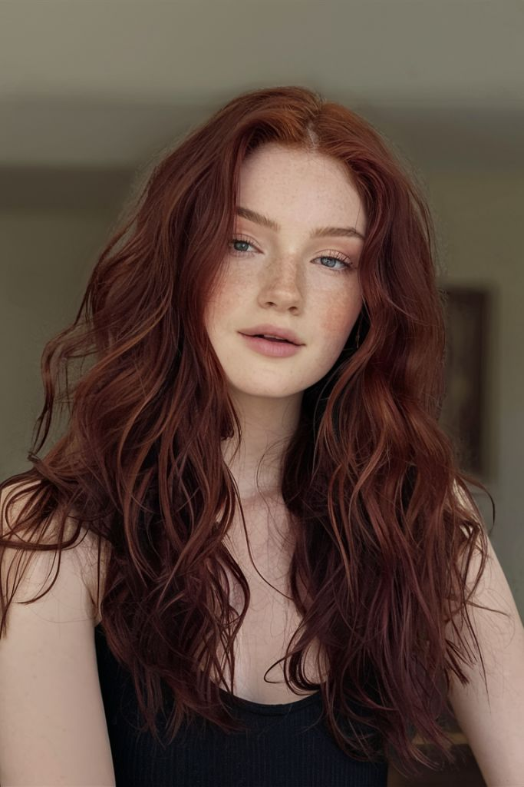

| En los ojos estaremos viendo sombras de un solo color, muy al estilo Y2K. El 2024 fue un poco el espejo de las tendencias de maquillaje del 2014, pero cada vez vemos menos paletas de muchos colores y las marcas están comenzando a lanzar sombras individuales. |
 |
 |
|  |
Desde los rubios y beige que transmiten ligereza, pasando por los rosas pasteles que evocan vanguardismo, hasta los tonos marrones, que en sus diferentes facetas, pretenden llevarse toda la atención. |
 |
.jpeg) |
.jpeg) |
Este mes nos trae una explosión de color, textura y tendencias que reflejan lo mejor de esta temporada. Desde opciones llenas de frescura para celebrar la llegada de la primavera hasta manicuras que conmemoran fechas especiales. |